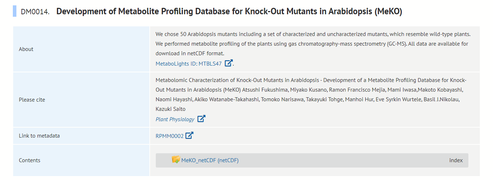
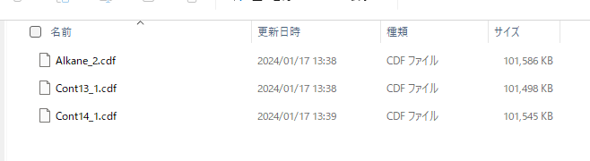
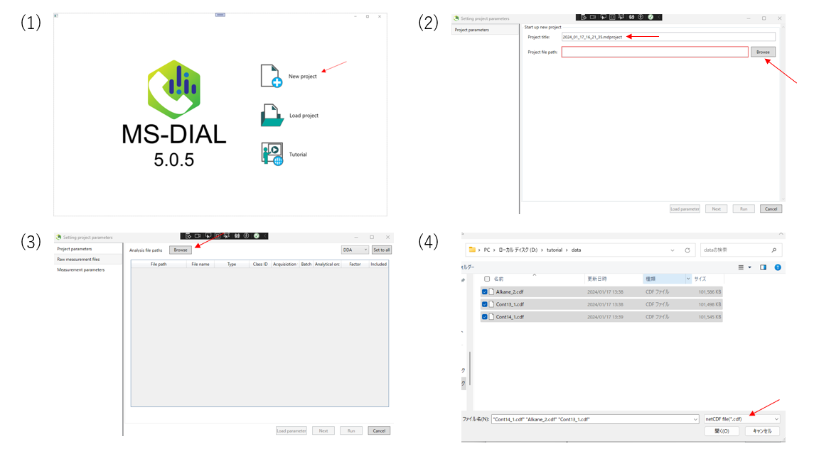
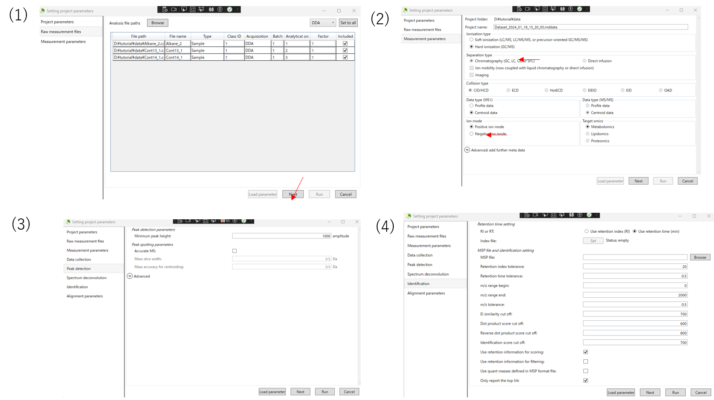
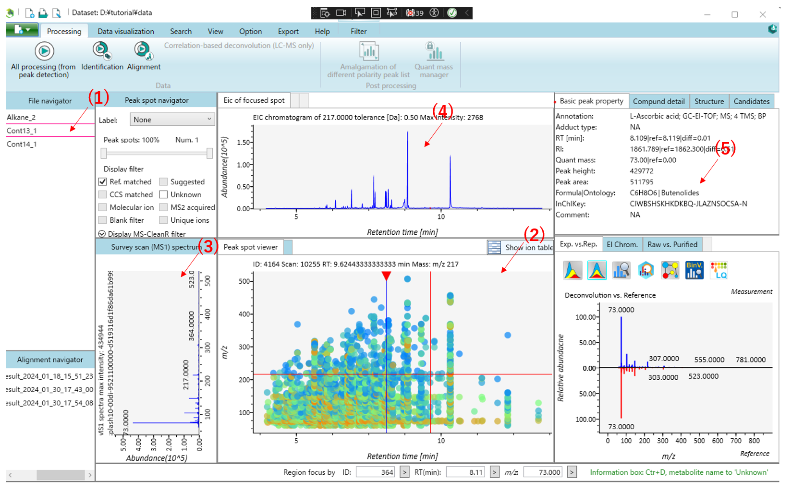
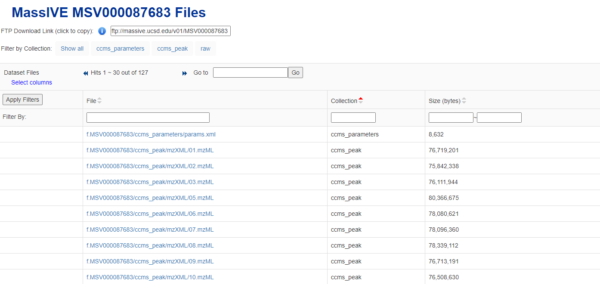
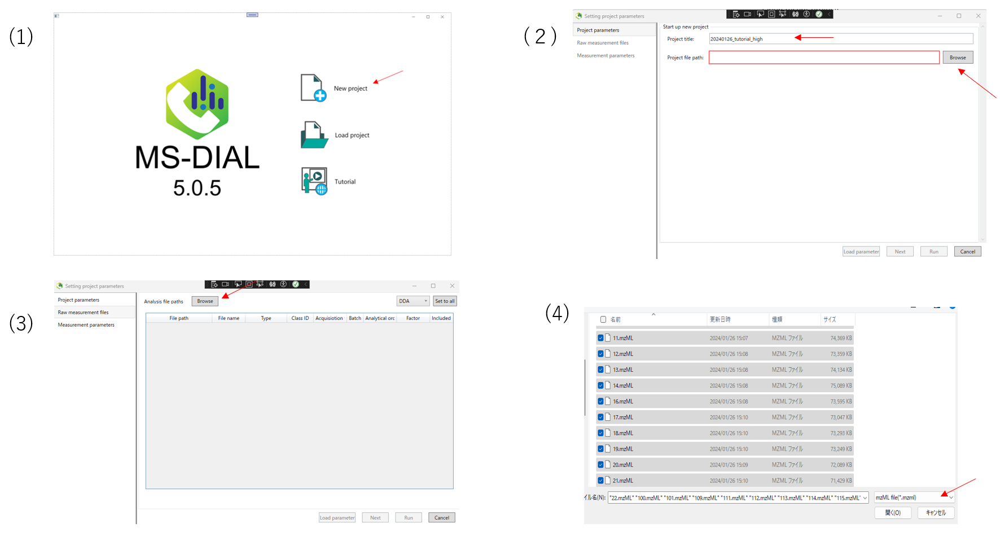
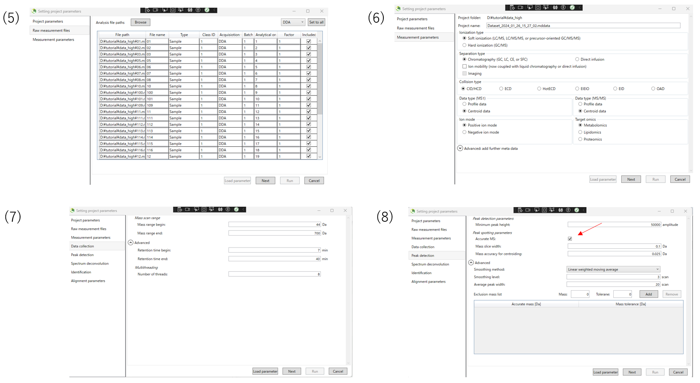
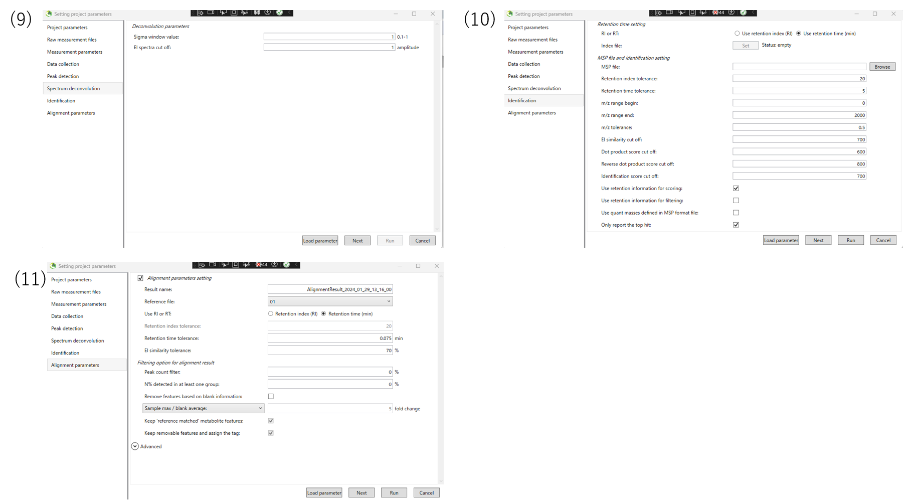

Metabolomics
See Figure 2 for the meanings of the abbreviations used in this chapter.
1. GC-MS (nominal mass)
1-1 Imput data
This tutorial uses a GC-MS dataset from the Development of Metabolite Profiling Database for Knock-Out Mutants in Arabidopsis.The files used can be downloaded from http://prime.psc.riken.jp/menta.cgi/prime/drop_index
 
1-2 Starting up your project

(1)Launch MS-DIAL,and select New project.
(2)Enter the project title.Then,enter of the path of the folder containing the data you want to analyze in the project path. Click Next.
(3)Select the file format you want to input amd input file. Click Next.
1-3 Setting parameters

(1)After confirming that you have imported the data, click Next.
(2)Next, set the measurement parameters. For GC-MS, select Hard ionization type item. Select the ion mode that applies to your experiment.
(3)In the peak detection section, you can change the parameters for peak detection. The data used in this tutorial are nominal mass data, so Accurate MS is not checked.
(4)Configure identification setting.Please choose whether to use retention index or retention time for annotation. If you use retention index, you need to set up index file.Click run when the setting are complete.
1-4 Result of annotation

This is the main viewer of MS-DIAL. (1) Double-clicking on a file name in the file navigator will display the detected peak information in the center window(Peak spot viewer).Blue spots indicate peaks of lower abundance in the sample, red spots indicate peaks of high abundance, and green spots indicate peaks of intermediate abundance. (2) Click on the triangle at the top of the Peak spot viewer to display the compound corresponding to the retention time.(3) The MS1 spectrum of the focused peak is displayed in the left window of the Peak spot viewer. (4)The ion chromatogram of the focused peak is displayed in the upper window.(5 )Other peak information is displayed in the upper right window.
2. GC-MS (high resolution)
2-1 Imput data

The data used in this tutorial are the results of a non-targeted GC-HRMS (Q Exactive GC Orbitrap) analysis of a PM2.5 air sample from the Maldives. This data is high-resolution mass spectrometry data.The files used can be downloaded from https://tuatsysbiolab.slack.com/archives/C06EZ3EQNTH/p1706108295928159
2-2 Setting parameters

(1)Launch MS-DIAL,and select New project.
(2)Enter a project name. Enter the folder containing the data you want to input into the project file path. Then click Next.
(3)Next,select the analysis file path. First click on Browse.
(4)Open the folder containing the files you wish to analyze, select the files and click Open. The same operation can be done with drag-and-drop. Also, remember to select the file format in the lower right corner according to the format of the file you wish to enter.

(5)After inputting the file, you will see a screen like this. When you confirm that the file has been entered, press the NEXT button to proceed.。
(6)Here we set the measurement parameter.In this case, select “Hard ionization” for GCMS. Select data type, ion mode, and targetomics according to the data you want to analyze, and click Next.
(7)The data collection section enable you to determine the mass range and retention time range you want to observe.
(8)In the peak detection section, you can change the parameters for peak detection. The data used in this tutorial are high resolution data, so Accurate MS is checked.

(9)The Spectrum deconvolution section allows you to set parameters for deconvolution of the spectrum.
(10)Please choose whether to use retention index or retention time for annotation. If you use retention index, you need to set up index file.This tutorial uses retention time.
(11)Finally, set the alignment parameters and click Run.
2-3 Result of anotation
This is the main viewer of MS-DIAL.(1) Double-clicking on a file name in the file navigator will display the detected peak information in the center window.Then select the Alignment spot viewer next to the Peak spot viewer to see the alignment results.Blue spots indicate peaks of lower abundance in the sample, red spots indicate peaks of high abundance, and green spots indicate peaks of intermediate abundance. (2)Click on the spot in the center window to see the information corresponding to that peak spot. (3) The MS1 spectrum of the focused peak is displayed in the left window of the center window.(4)The ion chromatogram of the focused peak is displayed in the upper window. (5) Other peak information is displayed in the upper right window.
3. LC/MS or LC/MS/MS (data dependent MS/MS) project with user-defined MS/MS database (MSP format)
Here, a project involving data-dependent MS/MS acquisition in conjunction with a user-defined MSP library (a composite library comprising MassBank, GNPS, and Respect) is presented.
Input Data
This section utilizes a total of 6 ABF files, with the MSP file being located in the same ZIP folder as this demonstration. The ABF files for this demonstration can be downloaded from http://prime.psc.riken.jp/compms/msdial/download/demo/20160805-Wine-DDA-Pos-Demo%20files.zip. The experimental protocol has been previously described in the following research: http://pubs.acs.org/doi/abs/10.1021/acs.jafc.5b04890.
Experiment summary:
- Liquid chromatography: total 4 min run per sample with Kinetex C18 2.6 μm (50×1.0 mm)
- Solvent A: water with 0.1% acetic acid
- Solvent B: acetonitrile with 0.1% acetic acid
- Mass spectrometer: data dependent method with positive ion mode
- Collision energy: 35 V
- Collision energy spread: 15 V
- Cycle time: 125 ms
- Mass range: m/z 60-1250
The video tutorial for the MS-DIAL operation
Key points in the MS-DIAL operation
- All sample
Types areSample. The input data here does not containQCorBlank. - For this input data, set a different
Class IDfor each sample. - You can paste Excel cells to MS-DIAL sample table.
3. CE-MS/MS
4. MS-DIAL isotope tracking function
This feature is currently in the development stage in MS-DIAL5, so if you want to use it now, please use MS-DIAL4.
https://systemsomicslab.github.io/mtbinfo.github.io/MS-DIAL/tutorial#chapter-7